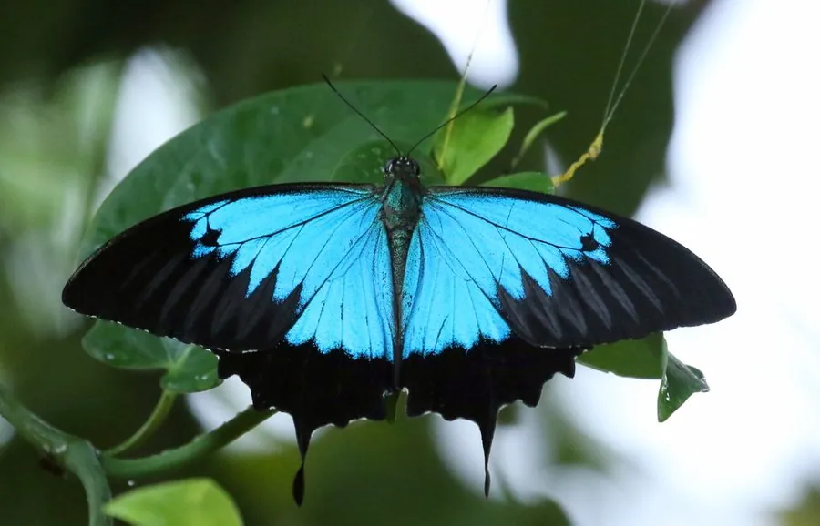

昆虫 · 动物界
天堂凤蝶 Papilio ulysses

翅面漆黑而上半部铺满耀眼蓝光的大型凤蝶，是澳大利亚昆士兰的象征，幼虫取食蜜茱萸属植物。
- 分类
- 门节肢动物门纲昆虫纲目鳞翅目科凤蝶科属凤蝶属
- 栖息环境
- 热带雨林、湿润桉树林与河谷旁的开阔林缘
- 地理分布
- 澳大利亚东北部、新几内亚及所罗门群岛
- 保护级别
- 在澳大利亚昆士兰州受法律保护，整体暂无灭绝风险
物种志
天堂凤蝶的翅展约十至十三厘米，翅面底色深黑，前翅和后翅中部铺着一大片结构色蓝斑，在阳光下像一块发亮的绸缎，换个角度看会转为紫蓝或天蓝。翅反面褐色，后翅有一列橙红色斑点与短尾突。雌蝶翅上的蓝斑较小，边缘黑带更宽，整体色调比雄蝶暗淡，停歇时也较少张开翅膀。
它分布于澳大利亚东北部、新几内亚及所罗门群岛，栖息在热带雨林、湿润的桉树林和河谷旁。成虫飞行极快，常在林缘树冠间穿梭，喜访花，尤其偏爱马缨丹等花蜜丰富的植物，雄蝶还会在湿地成群吸水。幼虫以蜜茱萸属等芸香科近缘植物为食，卵单产于寄主叶背，幼虫受惊时翻出黄色臭角并散发气味。它在昆士兰州受法律保护，是当地生态旅游的标志性物种。
形态与习性
- 翅展约十至十三厘米，蓝斑极为醒目
- 翅色黑底配结构色蓝斑，反面褐色带橙斑
- 雌雄差异雌蝶蓝斑小、黑带宽、色较暗
- 食性幼虫取食蜜茱萸属等芸香科植物
- 习性飞行极快，雄蝶常在湿地群集吸水
- 保护昆士兰州立法保护，限制捕捉
趣味知识
- 它翅上的蓝色不是色素，而是鳞片层叠产生的结构色，磨掉鳞片便会露出黑底。
- 天堂凤蝶飞得极快，常沿着林缘来回巡逻，像一道闪过的蓝光。
- 受惊的幼虫会从胸前翻出一对黄色臭角，同时散发刺鼻气味驱赶天敌。